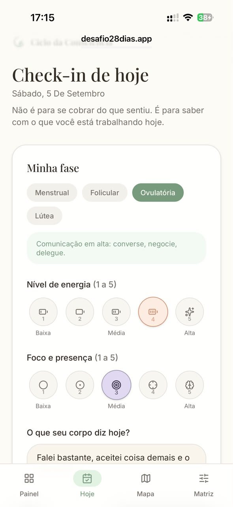
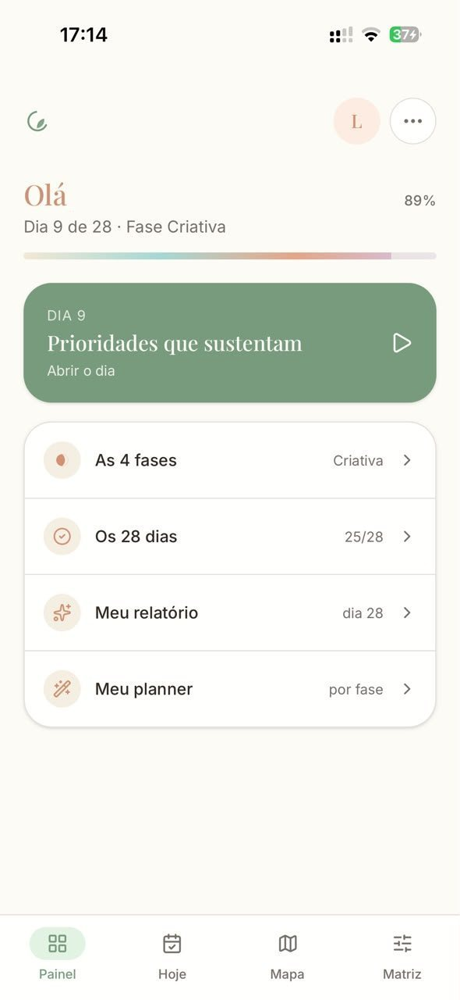
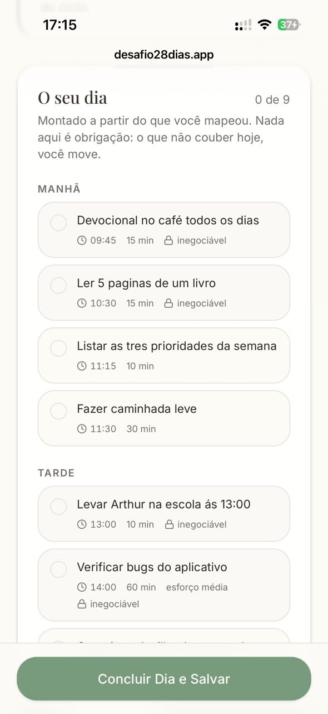
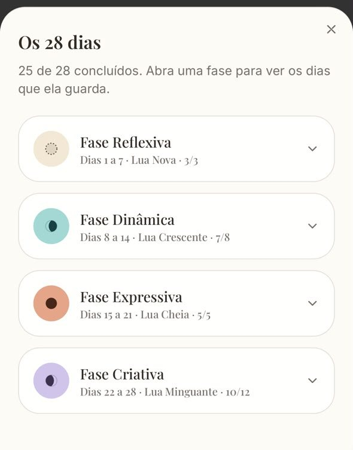
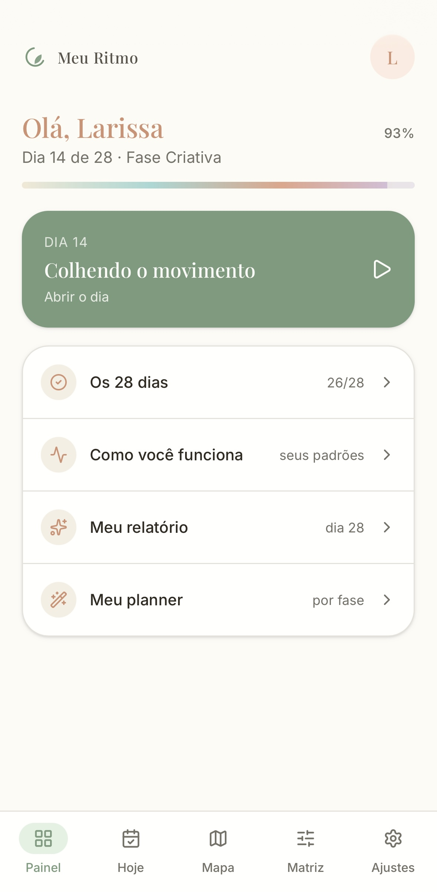
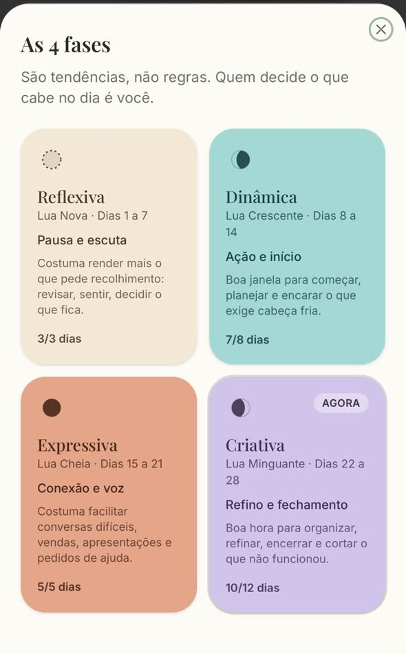
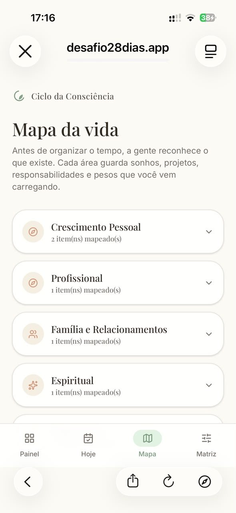
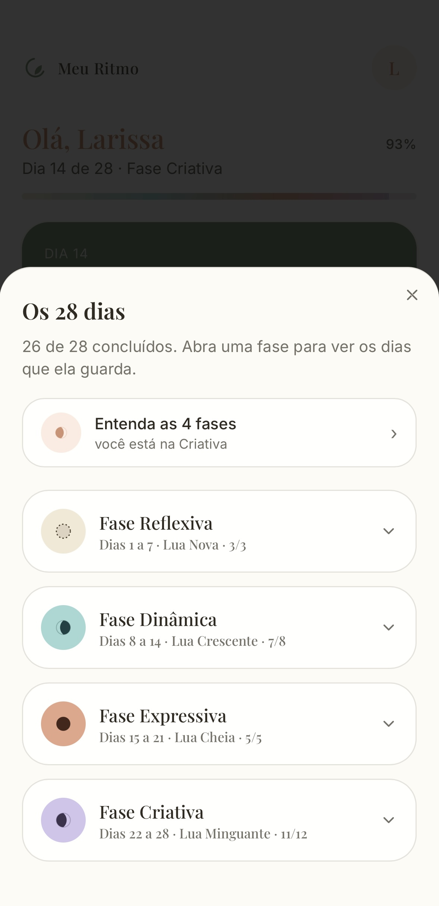
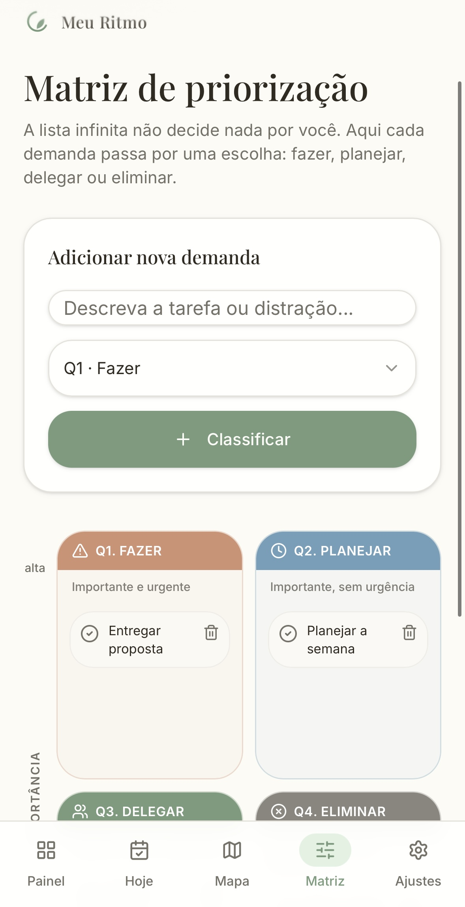

MEU RITMO · Organização pessoal com IA | Desafio 28 Dias
Sua cabeça está cheia, sua rotina não para e você já não sabe por onde começar?
O Meu Ritmo é um aplicativo com inteligência artificial que transforma suas responsabilidades, metas e prioridades em um plano personalizado de 28 dias.
R$ 37, pagamento único. Acesso vitalício ao aplicativo.
Você não precisa de mais um planner que exige que você dê conta de tudo, todos os dias. Precisa de um plano que seja feito para a sua vida, e não de uma rotina à qual você precise se adaptar.
Você recebe orientações diárias, acompanha seu progresso e, ao final, ganha um relatório dos seus padrões de organização e um planner criado especialmente para você.

Check-in diário de energia

Painel do dia e acompanhamento

Plano e tarefas por período
Identificação com a dor
Você passa o dia inteiro ocupada, mas sente que não avança no que realmente importa?
Você acorda pensando em tudo o que precisa resolver.
São as responsabilidades da casa, do trabalho, os compromissos, os objetivos pessoais e aquelas tarefas que você vive deixando para depois.
Você tenta se organizar.
Compra um planner. Baixa um aplicativo. Faz uma lista. Monta uma rotina.
Por alguns dias, parece que finalmente encontrou uma solução.
Mas a vida acontece.
Surge um imprevisto. A energia muda. As prioridades se acumulam. O planejamento começa a atrasar.
E, quando percebe, você está novamente tentando descobrir por onde começar.
O mais cansativo não é apenas ter tanta coisa para fazer. É sentir que precisa organizar tudo sozinha, o tempo inteiro.
Talvez você não precise de mais disciplina.
Talvez precise de uma forma de se organizar que considere a vida que você realmente tem.
Por que os métodos tradicionais falham
O problema de muitos métodos de organização é que eles esperam que você se adapte a eles.
Uma rotina pronta não conhece suas responsabilidades. Um planner tradicional não sabe quais são suas prioridades. Uma lista de tarefas não considera necessariamente como sua energia varia de um dia para o outro.
E, quando tudo depende de você decidir o que fazer, em que ordem e em qual momento, organizar-se acaba virando mais uma tarefa.
Planejamento tradicional
×Exige adaptação da usuária.
×Depende da organização manual.
×Não conhece a vida individual.
×Exige o mesmo ritmo todos os dias.
O Meu Ritmo propõe inverter essa lógica
✓Em vez de entregar um planejamento igual para todas as mulheres, ele usa as suas informações para construir um plano de ação personalizado.
✓Em vez de exigir o mesmo ritmo todos os dias, considera suas fases de energia e suas demandas reais.
✓Em vez de deixar você sozinha diante de uma lista enorme, apresenta orientações para cada dia.
Porque sua organização precisa acompanhar sua vida. Não o contrário.
Conheça o Meu Ritmo
Um plano de 28 dias que só existe para você.
O Meu Ritmo é um aplicativo de organização pessoal com inteligência artificial, criado para mulheres que desejam ter mais clareza sobre suas prioridades e construir uma rotina que respeite seu próprio ritmo.
Não é um ebook. Não é um planner pronto. Não é um desafio em que todas recebem as mesmas tarefas.
É um sistema que constrói seu planejamento a partir da sua vida.
Você informa suas responsabilidades, metas, compromissos e características da sua rotina.
A inteligência artificial usa essas informações para montar um plano personalizado de 28 dias e orientar suas atividades ao longo desse período.
Conforme você realiza seus check-ins, o sistema reúne informações sobre seus padrões de organização e rotina.
E, ao final, entrega um relatório e um planner personalizados para ajudar você a continuar se organizando.
Você não precisa montar tudo do zero. O Meu Ritmo prepara seu plano com você.
Demonstração real do aplicativo Meu Ritmo por dentro.
Simplicidade de uso
Como funciona o seu plano personalizado?
01
1. Conte como é a sua vida
O primeiro passo é um mapeamento da sua realidade.
Você informa suas responsabilidades, metas, objetivos, compromissos, demandas e aspectos importantes da sua rotina.
O sistema utiliza essas informações como ponto de partida.
Você não começa com um planejamento pronto. Começa contando como é a sua vida.

02
2. Receba seu plano de 28 dias criado pela IA
A inteligência artificial organiza suas informações e constrói um plano de ação personalizado.
Suas prioridades são distribuídas ao longo dos 28 dias, considerando sua rotina, suas demandas e suas fases.
Em vez de decidir sozinha como organizar tudo, você recebe um caminho para seguir.
03
3. Saiba o que fazer a cada dia
A cada dia, você acompanha as atividades planejadas e registra como foi sua execução por meio de check-ins.
Esses registros ajudam o sistema a identificar seus padrões de organização e rotina.
Você acompanha seu plano enquanto o sistema reúne informações sobre o que funciona para você.
E o melhor: os 28 dias não são o fim da sua organização. Eles são a base para construir uma forma mais personalizada de continuar.
Entregas concretas
Muito mais do que uma lista de tarefas para 28 dias
Ao entrar no Meu Ritmo, você terá acesso a:
01 · Diagnóstico
Seu mapeamento pessoal
Um processo para reunir suas principais responsabilidades, objetivos e áreas da vida em um só lugar.
02 · Plano de Ação
Seu plano de ação personalizado de 28 dias
Um planejamento criado pela inteligência artificial a partir das informações que você compartilha.
03 · Rotina
Orientações e tarefas diárias
Atividades organizadas para que você saiba quais ações estão previstas a cada dia.
04 · Ciclicidade
Planejamento que considera seu ritmo
Uma organização que leva em conta suas fases, seu ciclo e suas características individuais.
05 · Registro
Check-ins diários
Registros simples para acompanhar sua execução e reunir informações sobre sua rotina.
06 · Conclusão do Desafio
Relatório personalizado ao final dos 28 dias
Uma análise dos padrões de organização e rotina identificados a partir das suas informações e dos seus registros.
07 · Continuidade
Seu planner personalizado
Um planner construído com base no que foi identificado durante os 28 dias, para você continuar se organizando depois do desafio.
08 · Plataforma
Acesso vitalício ao aplicativo
Tudo isso com um único pagamento, sem mensalidade de acesso.
Continuidade Real
Plano de Ação, Relatório Final e Planner Personalizado
Não é apenas um planejamento para começar. É um processo para descobrir uma forma de organização que faça sentido para você.
Ao concluir a jornada de 28 dias, o aplicativo consolida seus aprendizados de ritmo e gera seu relatório e planner definitivos.

O aplicativo acompanha cada etapa e entrega seu relatório e planner ao final.
Respeito ao seu tempo
Você não tem a mesma energia todos os dias. Seu planejamento não precisa ignorar isso.
Existem dias em que você se sente mais disposta. Em outros, precisa lidar com mais cansaço, menos concentração ou diferentes responsabilidades.
Mesmo assim, muitos métodos de produtividade esperam que você mantenha sempre o mesmo desempenho. O Meu Ritmo considera essas variações na forma de organizar suas demandas.
Seu plano de 28 dias é estruturado em quatro fases:
🌑
Reflexiva
Um momento para observar sua realidade e olhar para suas prioridades.
🌓
Dinâmica
Uma fase orientada à movimentação e à execução de atividades.
🌕
Expressiva
Uma fase voltada à expressão e ao andamento das suas demandas.
🌘
Criativa
Uma fase para explorar possibilidades e organizar novas ideias.
Essas fases integram o método de organização do Meu Ritmo. O plano considera as informações que você compartilha sobre seu ciclo, sua rotina e suas características individuais.
A proposta não é fazer menos ou mais em determinada fase. É organizar suas responsabilidades de uma maneira que considere suas variações e necessidades.

Tela real do app: As 4 fases explicadas na prática.
Comparação direta
O que torna o Meu Ritmo diferente de um planner comum?
Planner tradicional
×Oferece uma estrutura que você precisa preencher.
×Depende de você decidir suas tarefas e prioridades.
×Normalmente exige que você mantenha o planejamento por conta própria.
×Entrega páginas ou ferramentas de organização.
Meu Ritmo
✓Cria um plano de ação a partir da sua vida.
✓Usa IA para organizar suas informações e prioridades.
✓Oferece orientação e check-ins diários.
✓Considera suas fases e seu ritmo.
✓Entrega um relatório e um planner personalizados ao final.
A grande diferença é simples: você não precisa adaptar sua vida a um planejamento genérico. O planejamento é construído a partir de você.
Telas reais do aplicativo
Veja como o Meu Ritmo funciona na prática
Antes de começar, você pode conhecer as principais etapas do sistema. Veja como suas informações são organizadas, como o plano de 28 dias é apresentado e como funciona o acompanhamento diário.
Do primeiro mapeamento ao planner personalizado, cada etapa tem uma função na sua organização.

Mapa da vida
Mapeamento das áreas, metas e responsabilidades.
Plano diário
Tarefas claras por período sem sobrecarga.

Os 28 dias
Acompanhamento de progresso distribuído nas 4 fases.

Matriz de priorização
Fazer, planejar, delegar ou eliminar.
Uma observação importante
O Meu Ritmo não promete mudar sua vida em 28 dias nem garantir que você alcance todas as suas metas.
Ele oferece um processo personalizado de planejamento e acompanhamento.
A identificação dos seus padrões depende das informações que você compartilha e dos check-ins que realiza ao longo dos 28 dias.
O que você recebe é um sistema para organizar suas prioridades, acompanhar sua rotina e construir um planejamento mais alinhado à sua realidade.
Acesso Imediato
Sua vida não precisa de mais um planejamento igual ao de todo mundo.
Precisa de um plano criado para você.
Entre no Meu Ritmo e tenha acesso ao Desafio 28 Dias com inteligência artificial.
✓Mapeamento da sua rotina e das suas prioridades.
✓Plano de ação personalizado de 28 dias.
✓Orientação e acompanhamento diário.
✓Organização considerando suas fases e seu ritmo.
✓Check-ins para registrar sua execução.
✓Relatório personalizado ao final.
✓Planner personalizado para continuar sua organização.
Compra realizada pela Kiwify · Ambiente seguro · Garantia de 7 dias
Tire suas dúvidas
Perguntas Frequentes
O Meu Ritmo é um planner digital?
Não. O Meu Ritmo é um aplicativo com inteligência artificial que monta um plano de ação personalizado de 28 dias a partir das suas informações, orienta suas atividades diárias e entrega um relatório e um planner personalizados ao final.
Todas as mulheres recebem as mesmas tarefas?
Não. O plano é construído a partir das informações fornecidas por cada usuária, considerando sua rotina, objetivos, responsabilidades e características individuais.
Preciso já ser organizada para usar?
Não. O Meu Ritmo foi criado especialmente para mulheres que sentem dificuldade de organizar suas demandas, definir prioridades e manter uma rotina.
Preciso ter uma rotina fixa?
Não. Você informa como é sua realidade, incluindo responsabilidades, compromissos e disponibilidade. O planejamento é montado considerando essas informações.
O Desafio 28 Dias é igual a um ciclo menstrual de 28 dias?
Não. Os 28 dias representam o período de planejamento e acompanhamento. Isso não significa que todos os ciclos menstruais tenham essa duração. O aplicativo utiliza as informações que você compartilha sobre seu ciclo e suas características individuais para compor o planejamento.
E se meu ciclo menstrual for irregular?
Durante o mapeamento, você informa os dados que conhece sobre seu ciclo e os padrões que percebe. O sistema utiliza essas informações para construir o planejamento personalizado.
Preciso dedicar muito tempo por dia?
O plano considera a rotina e a disponibilidade que você informa no mapeamento. Você acompanha as orientações do dia e realiza check-ins para registrar sua execução.
O que acontece depois dos 28 dias?
Você recebe um relatório sobre os padrões de organização e rotina identificados ao longo do acompanhamento e um planner personalizado, construído para ajudar você a continuar se organizando.
O aplicativo usa inteligência artificial de verdade?
Sim. A inteligência artificial utiliza as informações fornecidas no mapeamento para criar o plano de ação personalizado e os registros da jornada para identificar padrões de organização e rotina.
O Meu Ritmo substitui terapia ou acompanhamento médico?
Não. O Meu Ritmo é uma ferramenta de organização pessoal. Não realiza diagnósticos, não oferece tratamento e não substitui acompanhamento médico ou psicológico.
O pagamento é mensal?
Não. O valor é de R$ 37, em pagamento único, com acesso vitalício ao aplicativo.
Como recebo meu acesso?
Logo após a confirmação do pagamento pela Kiwify, você recebe imediatamente no seu e-mail de compra os dados de acesso e as orientações para entrar no aplicativo em desafio28dias.app.
Você não precisa continuar tentando encaixar sua vida em uma rotina pronta.
Suas responsabilidades são suas.
Suas prioridades são suas.
Seu ritmo também.
Então por que seu planejamento deveria ser igual ao de todo mundo?
Com o Meu Ritmo, você conta como é sua vida e recebe um plano personalizado de 28 dias, criado por inteligência artificial para acompanhar sua realidade.
Você terá orientações diárias e, ao final, um relatório e um planner personalizados para continuar sua organização.
Esta Política de Privacidade esclarece como o Meu Ritmo trata dados pessoais de acordo com a Lei Geral de Proteção de Dados Pessoais (Lei nº 13.709/2018 - LGPD).
1. Dados Coletados no Site vs. no Aplicativo
Nesta página: Não há formulário de cadastro nem coleta de informações sobre seu ciclo ou sua rotina. Sua escolha de privacidade é salva neste navegador. Com sua autorização, o Meta Pixel registra visitas e cliques nos botões de compra. O checkout acontece no site da Kiwify.
No aplicativo Meu Ritmo: As informações sobre rotina, metas, prioridades e ciclo são fornecidas dentro do aplicativo, após o acesso à conta, para personalizar o planejamento. Dados relativos à saúde são dados pessoais sensíveis e exigem proteção específica. Esta página de apresentação não recebe essas informações.
2. Uso de Inteligência Artificial
A inteligência artificial do Meu Ritmo atua unicamente como assistente de organização pessoal, estruturando suas tarefas com base nas regras e dados fornecidos por você. Não realizamos tomadas de decisão automatizadas que produzam efeitos jurídicos ou que afetem negativamente seus interesses (LGPD, art. 20).
3. Compartilhamento e Operadores de Dados
Não comercializamos seus dados em nenhuma hipótese. Os pagamentos e transações são processados com isolamento e segurança pela Kiwify (operadora de checkout e pagamento). Se você autorizar o marketing, o Meta Pixel pode transmitir à Meta identificadores de navegador, informações técnicas e eventos de navegação e cliques para mensuração de campanhas. Esses dados não devem ser considerados anônimos.
4. Direitos do Titular (Art. 18 da LGPD)
Você pode a qualquer momento confirmar a existência de tratamento, acessar seus dados, corrigir informações incompletas ou inexatas, solicitar anonimização, bloqueio ou eliminação de dados desnecessários e revogar consentimentos concedidos.
5. Contato sobre Privacidade
Para exercer seus direitos ou tirar dúvidas de privacidade, entre em contato pelo e-mail suporte@desafio28dias.app, descrevendo sua solicitação. Evite enviar dados sensíveis que não sejam necessários ao atendimento.
6. Suas Preferências neste Navegador
Você pode aceitar, recusar ou retirar a autorização de marketing em Preferências de Cookies, no rodapé. Sua escolha permanece neste navegador até ser alterada ou até que seus dados de navegação sejam apagados. Ao retirar a autorização, os novos eventos de marketing desta página são interrompidos; isso não elimina automaticamente dados já enviados à Meta. Para outras solicitações de privacidade, use o canal de contato acima.
Termos de Uso
Ao adquirir o acesso ao Meu Ritmo | Desafio 28 Dias, você concorda com as seguintes condições de uso:
1. Objeto e Natureza do Serviço
O Meu Ritmo é uma aplicação web e metodologia de organização pessoal e planejamento cíclico com inteligência artificial. O produto oferece mapeamento de rotina, plano de ação estruturado de 28 dias, orientações diárias, check-ins de acompanhamento, relatório de padrões e planner personalizado para continuidade.
2. Condições de Acesso e Pagamento
O acesso ao aplicativo é vitalício para a compradora, com pagamento único no valor de R$ 37, sem mensalidades ou taxas ocultas de recorrência.
3. Limitações do Produto e Isenção de Responsabilidade
Aviso Importante: O Meu Ritmo não é um serviço médico, psicológico, psiquiátrico ou de terapia. O aplicativo não fornece diagnósticos de saúde, prescrições de medicamentos ou tratamentos clínicos. Seu objetivo é exclusivamente a facilitação da gestão de rotina, metas e hábitos.
4. Propriedade Intelectual
Todos os elementos da plataforma, textos, metodologia, marcas e interfaces são protegidos pela legislação de propriedade intelectual e direitos autorais. O acesso é individual e intransferível.
Garantia e Política de Reembolso
Sua compra é protegida pela legislação brasileira e pela política de satisfação do Meu Ritmo.
1. Direito de Arrependimento (Artigo 49 do CDC)
A compra tem garantia de 7 (sete) dias corridos para solicitar o reembolso, sem necessidade de justificar a desistência. Aplica-se o direito de arrependimento do Art. 49 do Código de Defesa do Consumidor, contado da assinatura ou do recebimento do produto ou serviço, conforme o caso.
2. Como Solicitar o Reembolso
Acesse o portal de reembolso da Kiwify e informe o mesmo e-mail utilizado na compra. Você também pode solicitar pelo e-mail suporte@desafio28dias.app, informando o e-mail da compra e o número do pedido, se disponível. O reembolso corresponde ao valor integral pago.
3. Recebimento do Valor
O prazo de recebimento depende da forma de pagamento e da instituição financeira. No cartão, o crédito é processado pela administradora; no Pix, a devolução é processada pela plataforma. Para boleto, a Kiwify pode solicitar uma conta bancária de mesma titularidade da compra. Consulte os procedimentos atualizados da Kiwify e acompanhe a confirmação do pedido.
Preferências de Cookies
Gerencie como utilizamos cookies e tecnologias de rastreamento neste site de acordo com a LGPD.
Armazenamento necessário
Sempre Ativos
Salva sua escolha de privacidade neste navegador para lembrar sua preferência nas próximas visitas. Não é usado para publicidade.
Marketing e Desempenho (Meta Pixel)
Com sua autorização, o Meta Pixel registra visitas a esta página e cliques nos botões de compra para medir campanhas. Você pode retirar essa autorização a qualquer momento.